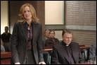

|
The Exorcism of Emily
Rose
By Judge J. Howard Sundermann
At first glance I thought this
film would be The Exorcist III, but I was surprised to
learn it was primarily a courtroom drama, and a pretty good one.
The film cuts back and forth from a trial to flashbacks that
tell the story of Emily Rose and a priest named Father Moore.
This is based on a true story.
Emily Rose is a college student
from a religious family who begins to have nightmares, sees demons
everywhere, speaks in foreign languages and has her body contort
involuntarily. The Doctors say she has epilepsy with psychotic
episodes, and that this can be controlled by medication. She
is given the medication and takes it. When she gets worse, her
family calls in Father Moore, their parish priest. He tells
Emily to stop the medication and gets permission from the archdiocese
to do an exorcism. During this procedure, Emily Rose dies and
Father Moore is charged with negligent homicide.
The court and jury are asked to decide either that Emily Rose
was actually possessed by the devil and Father Moore did his
best to save her, or that she had epilepsy and his actions, especially
discontinuing the medication, caused her death. There was medical
testimony to support this latter view. The decision would seem
to be based on the individual juror's personal views on this
issue. There is no doubt that Father Moore believes in her possession
and did what he thought was best for Emily Rose. Is this enough
for a not guilty verdict, even if you think Father Moore is wrong?
Father Moore's own lawyer is an agnostic and doesn't believe
in the devil, but Moore tells her, "Demons exist whether
you believe in them or not."
Not only is the defense lawyer, well played by Laura Linney,
an agnostic, but the prosecutor is deeply religious. He presents
his case skillfully and forcefully. Father Moore is portrayed
as a rational and reasonable man who believes in what he did.
The film is taut and well made, intentionally dark in the non-courtroom
scenes. All three main characters, the defense counsel, the
priest and the prosecutor are well acted. The court room scenes
are well done. For me, there was too much of Emily Rose going
through her manifestations of possession so that they could scare
us. The viewers are left to make up their own minds as to guilt
or innocence and as to what actually happened. Each side presents
evidence to support their version. The jury does render a verdict.
The film seems to me to lean a little in favor of true possession
for entertainment purposes. Presumably the filmmaker thinks
that a film where possession is just debunked would be less interesting.
There are also some side plots. The defense counsel works for
the law firm that represents the archdiocese. To avoid the embarrassment
of a trial, the archdiocese wants Father Moore to accept an offered
plea bargain. The firm tells the defense lawyer either to take
the bargain or if not, in no instance is Father Moore to be allowed
to take the stand. If she does not follow instructions, she
will be fired. Or course Father Moore refuses the plea and
insists on telling the full story in court. The defense attorney
must resolve this dilemma. She does admire Father Moore even
if she thinks he is misguided.
The film is being marketed as a horror movie, and parts of it
fit that description. But it is more than that. It is a good
courtroom drama with legal and ethical issues to be resolved
by us as well as the court.
Posted October 6, 2005
|